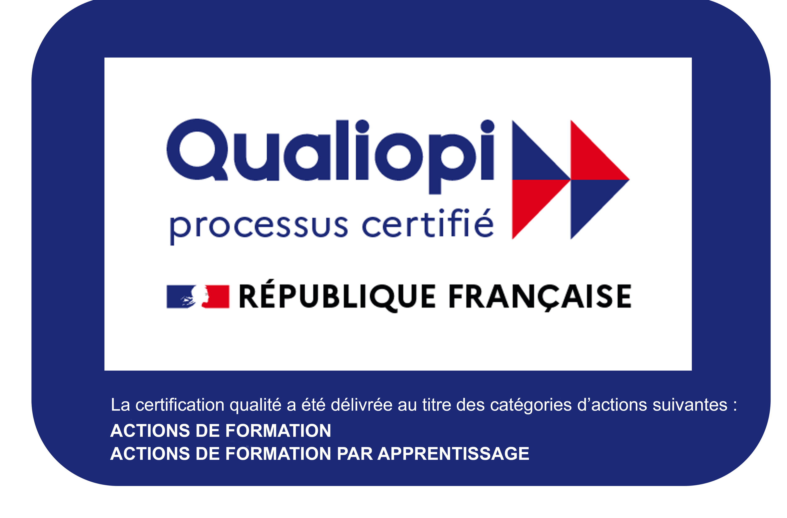

La Plateforme_ est une école du numérique et des nouvelles technologies co-fondée avec le Club Top 20 réunissant les grandes entreprises de la Métropole Aix Marseille. Elle comprend une offre de formations diversifiées destinées à former des codeurs et développeurs web, des experts en sécurité, des ingénieurs spécialisés en Intelligence Artificielle, et des cadres d’entreprises au travers de cycles de formations continues.
La Plateforme_ est membre du programme Grande Ecole du Numérique. Elle est soutenue par de grandes entreprises du territoire comme le Crédit Agricole Alpes Provence, par la Région Sud, le Département des Bouches du Rhône et la Métropole Aix Marseille Provence.
La Plateforme est reconnue Établissement d’Enseignement Supérieur Technique Privé de l’académie Provence Alpes Côte d’azur , enregistré sous le numéro 01344255
La Plateforme Marseille a obtenu la certification qualité depuis le 18 septembre 2020 au titre de la catégorie des actions de formation.

La Plateforme Formation a obtenu la certification qualité depuis le 23 mai 2022 au titre des catégories des actions de formation, actions de formation par apprentissage.
